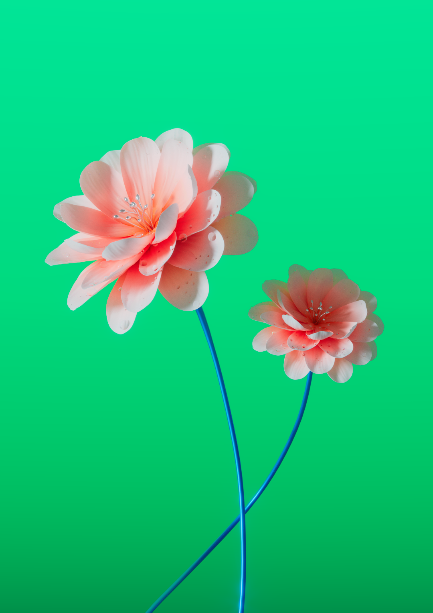
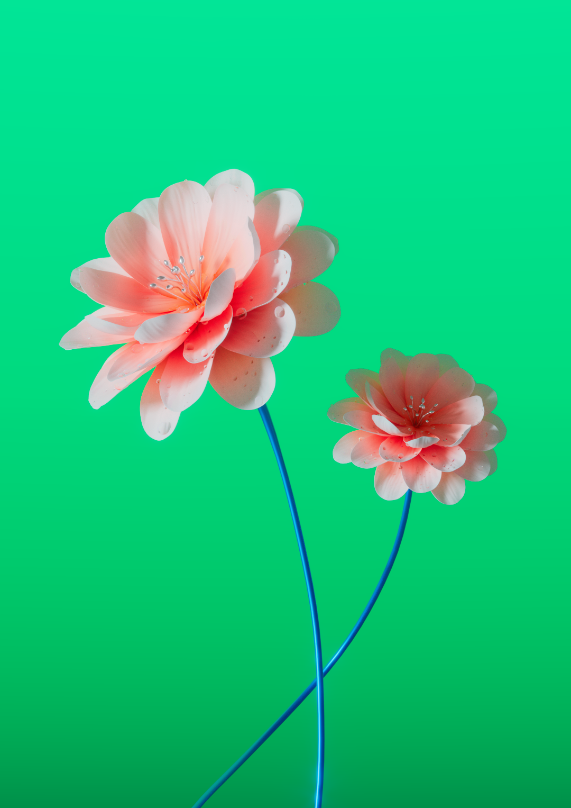
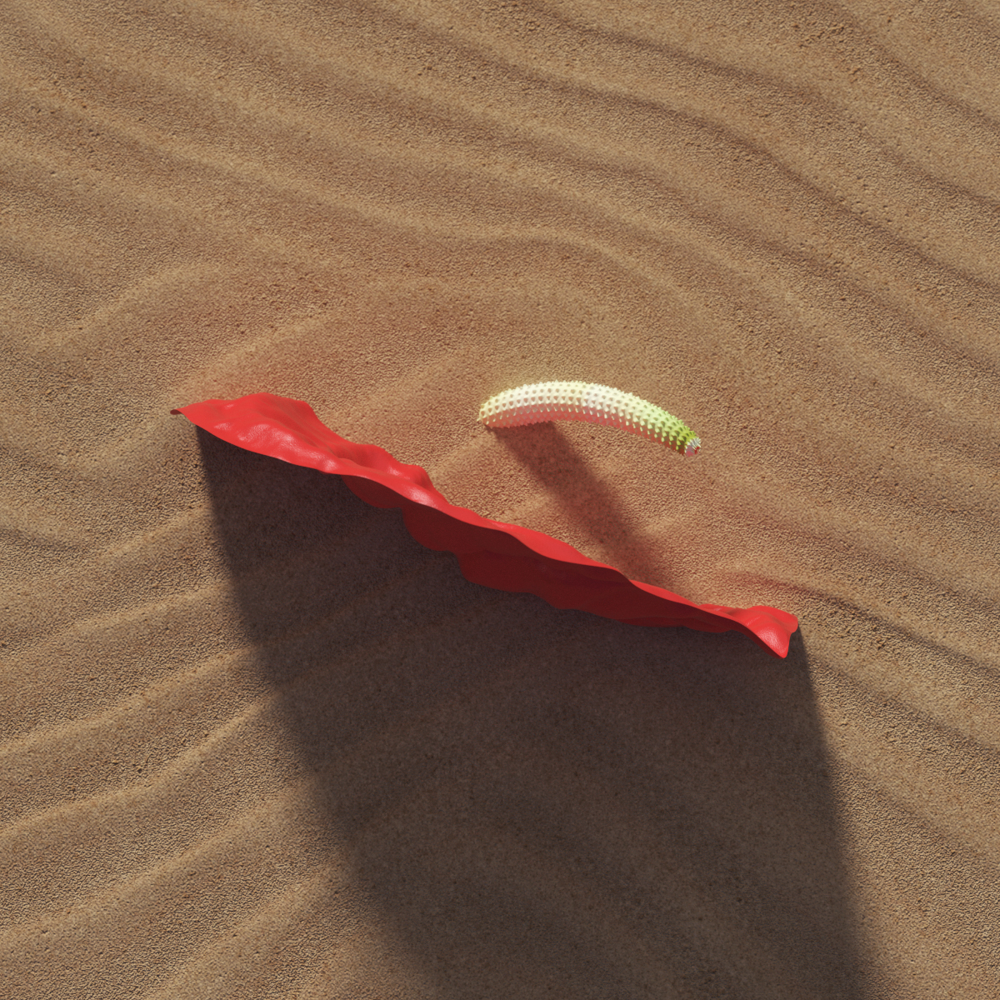
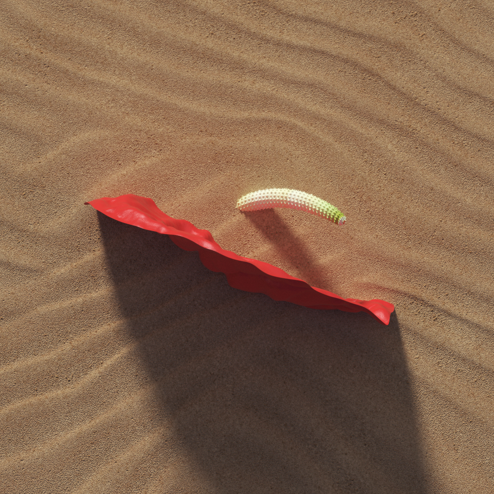

Flores
Na minha infância, minha mãe tinha diversas plantas e flores em casa e isso me fez criar um apreço por retrata-las nos meus renders. Esse projeto é uma seleção dessas ilustrações que fiz ao longo dos anos.
Cliente: Vários
Ilustração, 3D
Ano: 2018 → ...


 

 
